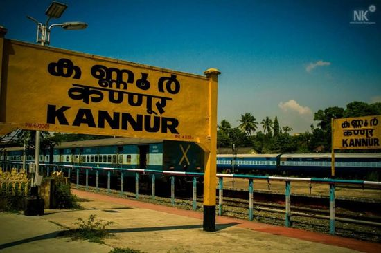

 Kannur is a coastal city in the south Indian state of Kerala. It was once an ancient trading port. Enduring monuments such as 16th-century St. Angelo Fort, once occupied by European colonial forces, show the city’s significant role in the spice trade. Housed in a former palace, the Arakkal Museum highlights Kerala's one Muslim royal family. The palm-fringed sands of Payyambalam Beach run along Kannur’s western shore. Kannur is dubbed as the City of Looms and Lores, thanks to the flourishing handloom industry and folk art called Theyyam. Theyyamis a ritualistic artform encompassing dance, music and mime, where the artist dons the guise of God.
Kannur is believed to have got its name from being the land of Kannan or Krishna. Kannur formerly known in English as Cannanore, Arabic as Kannanur, and Portuguese as Cananor, is a city and a Municipal Corporation in the state of Kerala, India. It is the administrative headquarters of the Kannur district and situated 274 kilometres (170 mi) north of the major port city & commercial hub Kochi & 137 kilometres (85 mi) south of the major port city & a commercial hub, Mangalore. During the period of British colonial rule in India, when Kannur was a part of the Malabar District (Madras Presidency), the city was known as Cannanore. Kannur is 6th largest urban agglomeration in Kerala.As of 2011 census, Kannur Municipal Corporation, the local body which administers mainland area of city, had a population of 232,486.[1][6] Kannur was the headquarters of one of the four most important dynasties on Malabar Coast namely Kolathunadu, along with the Zamorin of Calicut, Kingdom of Cochin, and Kingdom of Quilon. The Arakkal kingdom had right over the city of Kannur and Laccadive Islands in the late medieval period.[7] Kannur municipality was formed on 1 November 1866 according to the Madras Act 10 of 1865 (Amendment of the Improvements in Towns act 1850)[8][9][10][11] of the British Indian Empire, along with the municipalities of Thalassery, Kozhikode, Palakkad, and Fort Kochi, making them the first modern municipalities in the state. It was upgraded into a municipal corporation in the year 2015. Kannur Cantonment is the only Cantonment Board in the state of Kerala.[12] Indian Naval Academy at Ezhimala is the Asia's largest, and the world's third-largest, naval academy.[13][14][15] Muzhappilangad beach is the longest Drive-In Beach in Asia and is featured among the top 6 best beaches for driving in the world in BBC article for Autos.[16][17] During British rule, Kannur's chief importance laid in producing Thalassery pepper.